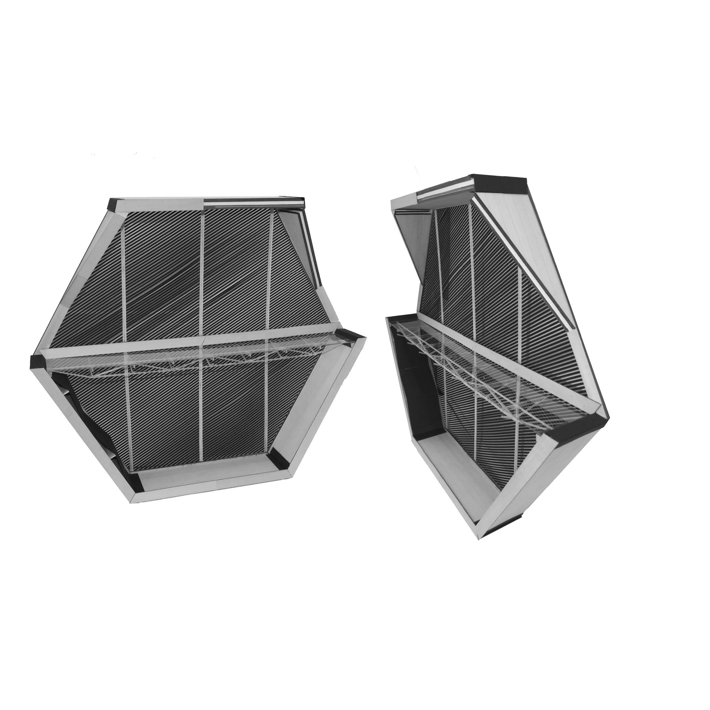

Music Rooms
An investigation of spatial and formal relations within a proposal for the Georgia Institute of Technology School of Music
Laudeman, Sara M
ARCH 8856 MC | Fall 2018 | Georgia Institute of Technology
Ten practice rooms
Two Large
Three Medium
Five Small
Ten corresponding “gardens”
Intended to provide the Georgia Tech School of Music with dedicated practice rooms, these two narrow buildings have exterior access to each practice room with covered and uncovered unconditioned public spaces which serve the two paired buildings. Circulation bridges stitch across the space between the two forms. The campus scale is the first context for the proposal. Relations, using elements that are part of Kevin Lynch's set, inform design decisions at the larger scales. At the site scale, the buildings surrounding the proposal are located and employed as anchors so that this project can reach into space, sliding against the grain of path and building alike in order to situate itself on campus. It penetrates the Klaus/Caddell courtyard at its thinnest, and against the smooth facades, it slips against Architecture West and the pedestrian path between Clough and the Binary Bridge.
In the frame of the building, the considerations of site carry through. In section, organization is defined by a set of hexagonal geometries that interlock and stack together, serviced by a central circulation system. The two halves interlock without touching, creating balance and a moment of peace in the courtyards beneath the structure that towers overhead.
The detail scale pays homage to wood construction. The structural system is a CLT scheme that is reinforced with steel bands that serve to counter shear and racking forces. The facade contrasts the warmth of the natural colors of the CLT structure with a charred wood finish. Suspended from a modular system, the facade panels slide aside to allow access to the practice rooms beyond.

In section, there is a dialogue between levels. The medium practice rooms float inside of the volume of slanted hexagonal cells, large practice rooms occur only on the ground level, and the small practice rooms are dotted across the four levels. The gardens are interspersed throughout in unconditioned cells. The circulation paths stitch these different spaces into a coherent whole. The sectional qualities (as seen in drawing below) play off of the exterior staircase of Architecture West immediately adjacent to the project. On the even face that slips against the existing building, the gardens cause cells to start to peel away, exposing the interior of the project to the existing context.

